leon.music docs
Everything you need to run your own streaming service: installation, accounts, live radio and the admin panel.
Install
leon.music is two files: leon_music.py (the server and tray app) and frontend.html (the player). You need Python 3.9 or newer.
git clone https://github.com/weareleon/leonmusic cd leonmusic pip install -r requirements.txt python leon_music.py
A tray icon appears and your browser opens http://localhost:7733. To update later, run git pull and restart. Your library and settings carry over.
pip install -r requirements.txt --break-system-packages, and the tray icon needs an appindicator backend (for example sudo apt install gir1.2-appindicator3-0.1).First run
The welcome wizard asks for three things:
- Your music folder. leon.music only reads it and never changes your files.
- A name for your library, shown in the app and on generated covers.
- An admin password (8 or more characters). You need it for the admin panel and for logging in as
admin.
Then leon.music scans your files. Rescans skip unchanged files, so they're quick. Rescan from the tray menu or from Settings.
Organising your library
Music/ ├── Late Night/ ← becomes the "Late Night" playlist │ ├── song1.mp3 │ └── song2.flac ├── Workout/ ← becomes the "Workout" playlist └── loose-song.mp3 ← in the library, but in no playlist
- Only the first-level folder becomes a playlist. Albums, artists, genres and years come from the file tags.
- Supported formats: MP3, FLAC, M4A/AAC, OGG, Opus, WAV and WMA, with embedded cover art.
- Good genre and year tags make Search categories, Decades, Made for You and Charts much better. Spelling variants like "Hip-Hop/Rap" and "hip hop" count as one genre.
Home & Made for You

When someone logs in with an account for the first time, they pick the genres they like and get a personal mix. Their home page then shows:
- Made for You: New Music, Heavy Rotation, Your Essentials, Get Up!, Chill and their genre mix. Mixes refresh daily, and a mix only appears once it has at least 5 songs.
- Top Picks for You appears after about 10 plays: their own station, more from a favourite artist, new releases and a high-energy pick.
- Rewind playlists, one for every year they've listened.
Generated covers show your cover logo (set in the admin panel), or your library name if no logo is set.
Search, genres & decades
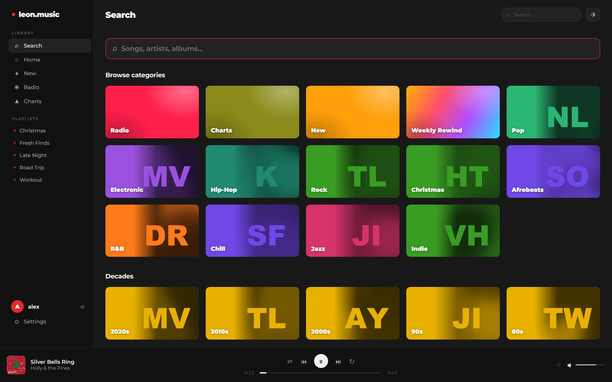
Type in Search to find songs, artists and albums. With an empty search box you see Browse categories: Radio, Charts, New, Weekly Rewind, one tinted tile per genre, and a Decades row. Each genre and decade opens a page with feature cards, generated playlists (Hits, New in…, Essentials, Deep Cuts, Mix), top songs, albums and artists.
New & Charts
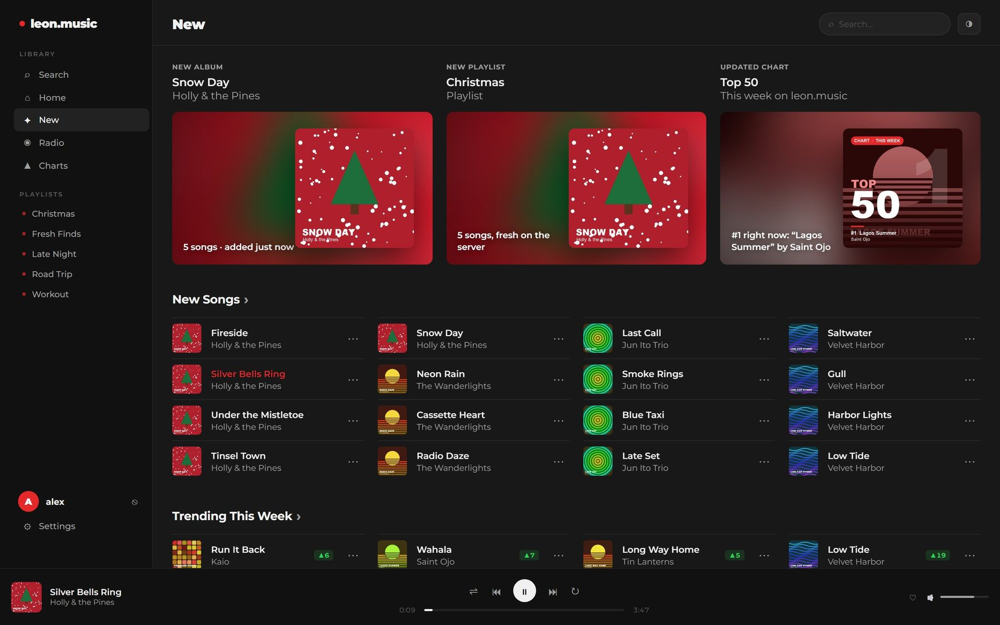
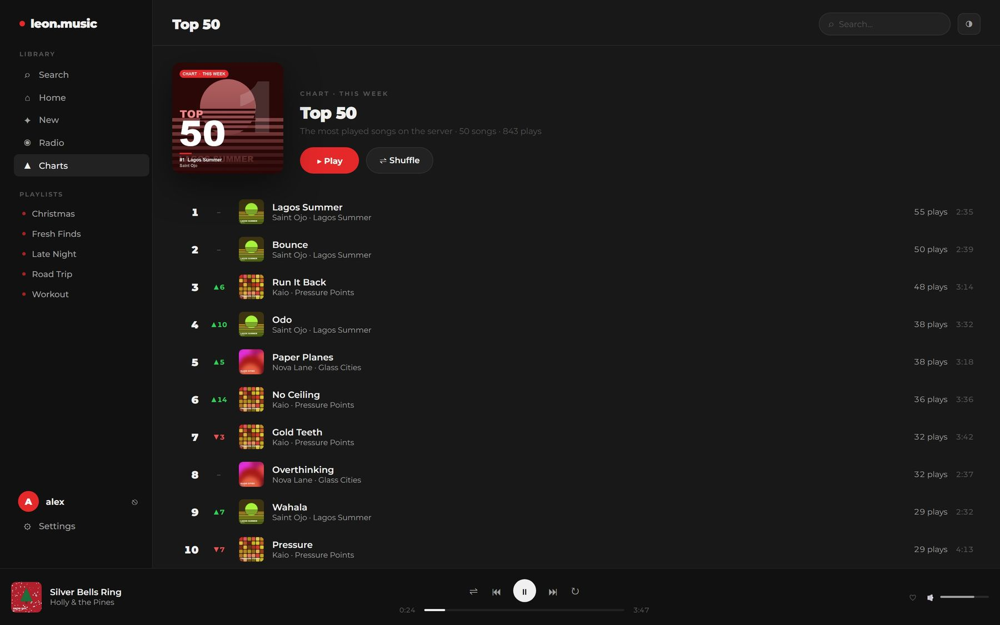
New collects the newest songs, trending songs, new albums, new and updated playlists (anything added in the last 14 days), this year's releases and new artists. Albums, Artists and Songs are at the bottom of this page.
Charts count a play once someone has listened for about 30 seconds (or half of a short song). You get a Top 50, genre charts and artist charts for this week, this month and all time, with rank movement compared with the previous period.
Rewind

- Weekly Rewind (open it from Search): minutes this week compared with last week, plays, a day-by-day chart, top artists and songs, and artists played for the first time.
- Rewind: pick a year and month to see minutes, top artists, songs and albums, plus that year's Rewind playlist.
- End of Year Rewind: every December a banner on Home opens a summary of the whole year.
Minutes assume a counted song was played in full, so totals are a close estimate.
Christmas
Search has a 🎄 Christmas tile (it moves to the front from 15 November to 6 January). It collects everything Christmas: songs whose genre, folder or album mentions Christmas, Xmas, holiday, jul or noël. The page has feature cards (your Holiday station when it's on air, Christmas folder playlists, the song of the season), special playlists (Christmas Classics, Cozy Christmas, Christmas Party, New Christmas Music), top songs, albums and artists.
Likes & your own playlists
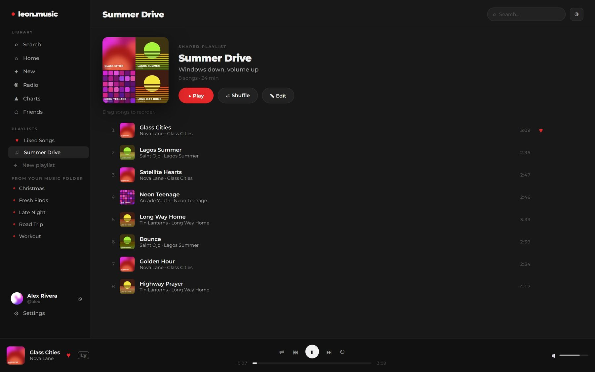
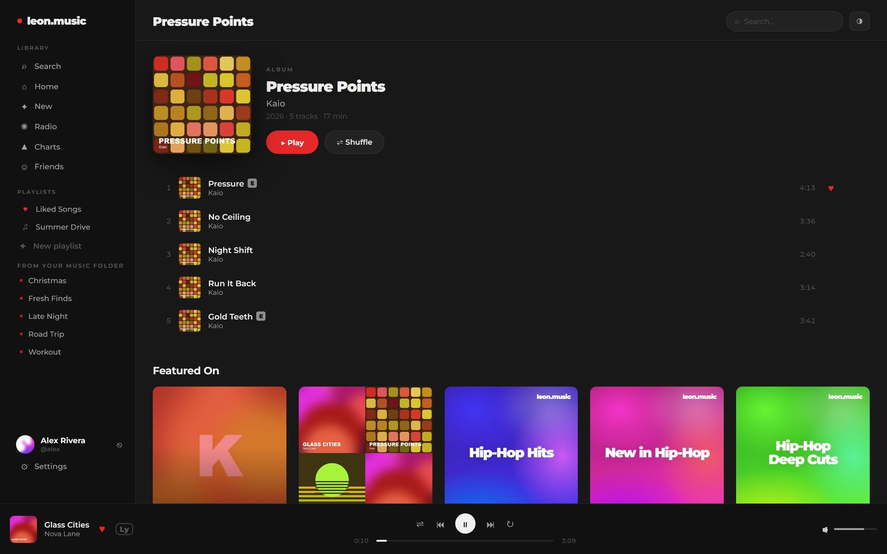
- ♥ Like any song with the heart on a song row or in the player, or from its ··· menu. Liked songs collect in Liked Songs at the top of the sidebar's Playlists, newest first.
- Make playlists with + New playlist in the sidebar, or ··· → Add to playlist… on any song (pick an existing one or create a new one). Save as playlist on Liked Songs copies them into a playlist.
- On a playlist page: drag songs to reorder (with a mouse), ✕ removes a song, and Edit changes the name and description or deletes it.
- Share a playlist (Edit → "Share with everyone on this server", or in your profile settings) and it appears in everyone's sidebar with ⇄. Others can play it or Save a copy, but only you can change it.
- Likes and playlists belong to each account. On a server without accounts there's one shared set. People logged in only with the shared library password can't use them, because everyone shares that login.
Lyrics

leon.music looks for lyrics in this order, and saves what it finds:
- A
.lrcfile next to the song with the same name, for exampleSong.mp3+Song.lrc. Timestamped lines like[01:23.45]give synced lyrics. - Lyrics stored inside the file (ID3 USLT, Vorbis
LYRICS, iTunes lyrics). - LRCLIB, a free, open lyrics database, when online lookup is on. It receives the artist, title, album and length. Each song is looked up once; misses are retried after a week.
Turn online lookup off in the admin panel's Artists card ("Look up lyrics on LRCLIB").
Playlist covers
Click a playlist's cover (or 🖼 Cover) to open the cover designer. Admins get the same designer for folder playlists via Design cover.
- Background: your own photo (uploaded, up to 6 MB), a gradient, a blend or a solid colour. Admins can also paste an image URL for folder playlists.
- Overlay: none, fade, darken or tint, with a strength slider.
- Text: title and subtitle, position, alignment, size, colour and capitals.
- Fonts: four built-in styles, or More fonts on this computer… to pick any font installed on the computer running leon.music. Each name is shown in its own font.
The preview updates as you change things. Remove goes back to the automatic cover.
Album pages
Under the track list, album pages show:
- Featured On: the artist's Essentials, the folder playlists that include songs from the album, and the genre and decade playlists from Search's categories that include them (for example Pop Hits or 2020s Deep Cuts), with how many of the album's songs each one has.
- More from artist: their other albums.
- You May Also Like: albums by other artists, genre matches first, then similar era and what's popular on the server.
Explicit songs
Songs tagged as explicit get a small E badge everywhere. leon.music reads:
- the iTunes rating on M4A/AAC files (explicit, or clean),
- an
ITUNESADVISORY(1 = explicit, 2 = clean) orEXPLICITtag on MP3, FLAC and OGG, - "(Explicit)" or "[Explicit]" in the title.
Songs without any of these count as clean. Existing libraries are checked once in the background after updating; new files are checked when they're scanned. Live radio stations can skip explicit songs; see Program the schedule.
Accounts & logins
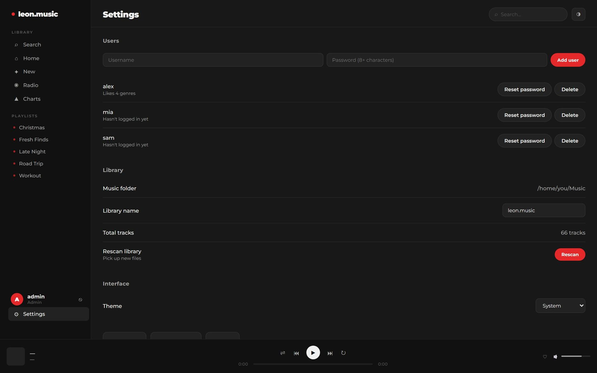
Add accounts under Settings → Users. As soon as the first account exists (or a library password is set), everyone has to log in on the same screen:
| Who | Username | Password |
|---|---|---|
| A user | their username | their password |
| The admin | admin | the admin password |
| Anyone with the shared password | leave blank | the library password |
Passwords are 8 or more characters and stored as salted scrypt hashes. Logins last 30 days. After 5 wrong attempts, logins from that device pause for 5 minutes. Resetting a user's password signs them out everywhere.
Profiles & friends
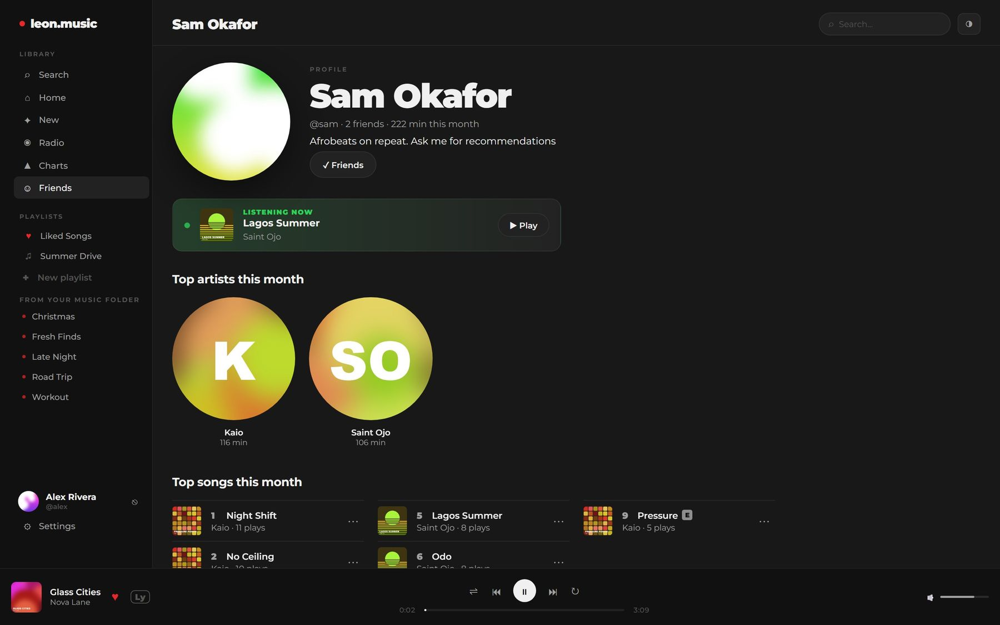
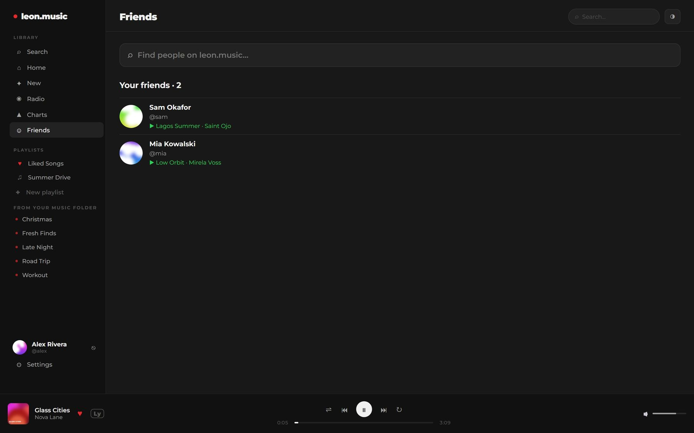
Everyone with an account can set up a profile. A Set up your profile card appears on Home, and Edit profile on your profile page reopens the wizard:
- You: profile photo (cropped to a square automatically), display name, username and bio. Changing your username also changes what you log in with.
- Playlists: which of your playlists (and whether your Liked Songs) appear on your profile.
- Privacy: who can see your listening (everyone on this server, only my friends, or only me) and whether to show your top artists and songs.
Profile pages show the photo, name, bio and friends, a Listening now strip, top artists and songs this month, recently played, and public playlists, all following that person's privacy choices. Click your own name in the sidebar to see yours.
Friends (in the sidebar): search everyone on the server, send requests, accept or decline them, and see what your friends are playing right now. Both people have to agree; removing a friend removes it for both.
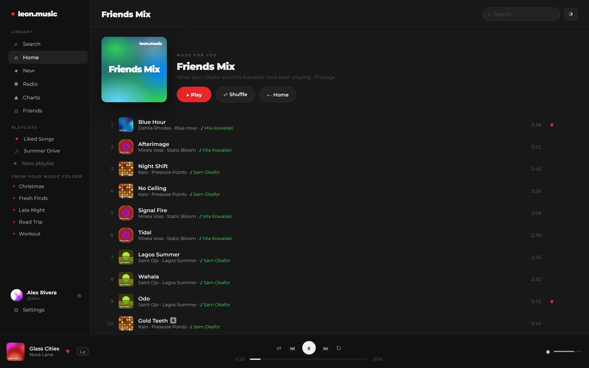
New profiles share listening with friends only. Friends who choose only me are left out of your Friends Mix.
Listening from anywhere
leon.music listens on 127.0.0.1:7733. To use it from your phone or away from home, put it behind a reverse proxy with HTTPS, such as Caddy, nginx, Tailscale Serve or Cloudflare Tunnel.
Live radio: what it is
Live radio turns your library into real radio stations. Each station plays non-stop from the playlists you choose, follows a schedule, and is broadcast as a normal internet radio stream. Everyone who tunes in hears the same song at the same moment, just like FM radio. Listeners don't need an account, and they can use the leon.music Radio page, a phone app, VLC, a smart speaker or any player that can open a stream URL.
Made by you from your own music. leon.music sends them out through Icecast. Set up in Radio → Set up live radio.
Someone else's station (any Icecast or Shoutcast URL). leon.music only plays them. Added in the admin panel; see below.

What you get:
- Up to 12 stations, each with its own logo, colours, tagline and stream address.
- A schedule per station: a normal rotation, plus shows that take over at set days and times, with optional cover art.
- Live song info: the current artist and title appear in leon.music, in Icecast and in most radio players.
- Hands-off running: stations start with leon.music, survive Icecast restarts, and pick up schedule changes between songs.
How it works
For each station, leon.music runs a small broadcaster in the background:
- It picks the next song. It checks the station's schedule for the current day and time. If a show is on, it plays from the show's playlists, and otherwise from the normal rotation. Songs are random, but it won't repeat any of the last ~50 songs (fewer for small playlists). If the scheduled playlists are empty, it falls back to your whole library so the station never goes silent.
- It converts the song. ffmpeg turns any format (FLAC, M4A, OGG…) into a constant-bitrate MP3 at the quality you chose. Without ffmpeg, only MP3 files are played.
- It sends the audio to Icecast at exactly real-time speed, keeping about 3 seconds ahead so playback stays smooth across song changes.
- It updates the song info ("Artist - Title") on Icecast and in leon.music at the start of every song.
- Icecast streams it to everyone listening on that station's mount, its address on the Icecast server (for example
/hits).
Before you start: install Icecast
You need an Icecast server that leon.music can reach. The easiest setup is Icecast on the same computer as leon.music.
| System | How to install |
|---|---|
| Windows | Download the installer from icecast.org/download, install, then start Icecast from the Start menu (or run it as a service). |
| macOS | brew install icecast, then icecast -c /opt/homebrew/etc/icecast.xml (Intel Macs: /usr/local/etc/icecast.xml). |
| Debian / Ubuntu | sudo apt install icecast2. The installer asks for the passwords, then start it with sudo systemctl enable --now icecast2. |
| Docker | Any maintained Icecast image works. Map port 8000 and set the source password through its environment variables. |
Then open icecast.xml and check three things:
<authentication>
<source-password>choose-a-strong-one</source-password> ← leon.music
<admin-user>admin</admin-user>
<admin-password>something-else</admin-password> ← Icecast's web page
</authentication>
<listen-socket>
<port>8000</port> ← port for the wizard
</listen-socket>
<limits>
<sources>12</sources> ← ≥ your stations
</limits>hackme passwords. Anyone who knows the source password can broadcast on your server.Restart Icecast after editing, then open http://localhost:8000. If you see the Icecast status page, it's running.
brew install ffmpeg or sudo apt install ffmpeg) and restart leon.music. The wizard tells you whether it was found.Setting up your stations
Log in as admin, open Radio and click Set up live radio. The wizard has four steps.
1. Pick your stations

Click the ready-made stations you want: 1 (everything), Hits, Club, Chill, Country, Hip-Hop, Throwback, Latino, Focus, Party and Holiday. Each comes with an original logo carrying your library's name. Or click Custom station to make your own: name, tagline, two colours and a logo style, with a live preview. Station names must be unique.
2. Program the schedule
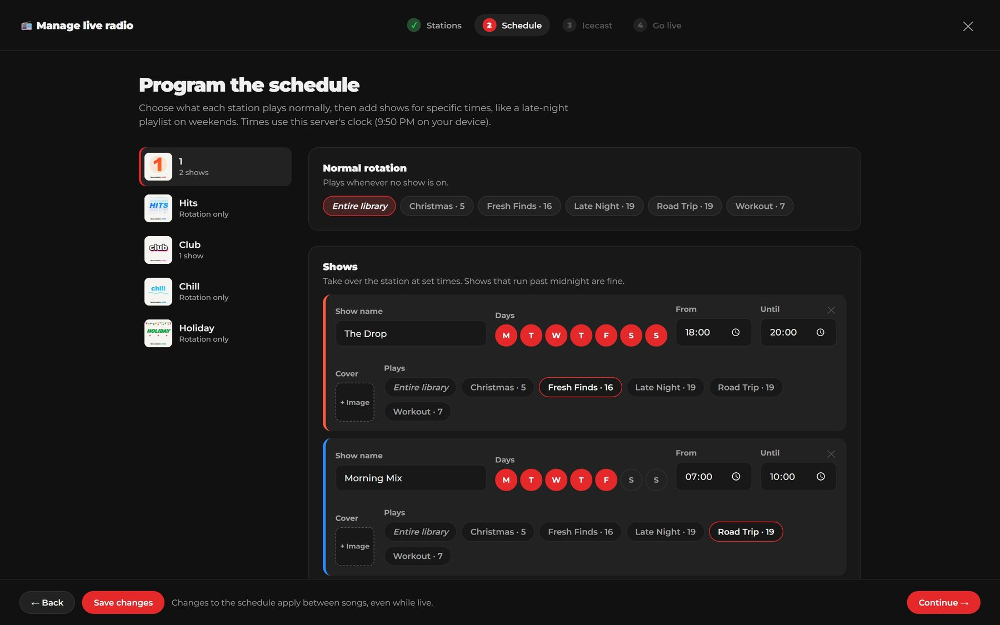
- Allow explicit songs: switch it off and the station skips every song tagged explicit. Switch it on and it plays them, with an E on the station. Stations default to on.
- Normal rotation: what the station plays when no show is on. Pick one or more playlists, or Entire library. Ready-made stations pre-select playlists whose names match (for example a "chill" or "lofi" folder for Chill).
- Shows: click + Add a show, give it a name, pick the days, a start and end time, and its playlists. A show can run past midnight (for example 22:00–02:00 on Fridays and Saturdays). Add an optional cover image; otherwise the station logo is used.
- Week at a glance shows every show as a coloured bar, so you can spot overlaps and gaps (gaps play the normal rotation). If shows overlap, the one listed first wins.
- The Holiday station is special: it plays exactly one playlist, your Christmas playlist, around the clock, with no shows.
3. Connect your Icecast server
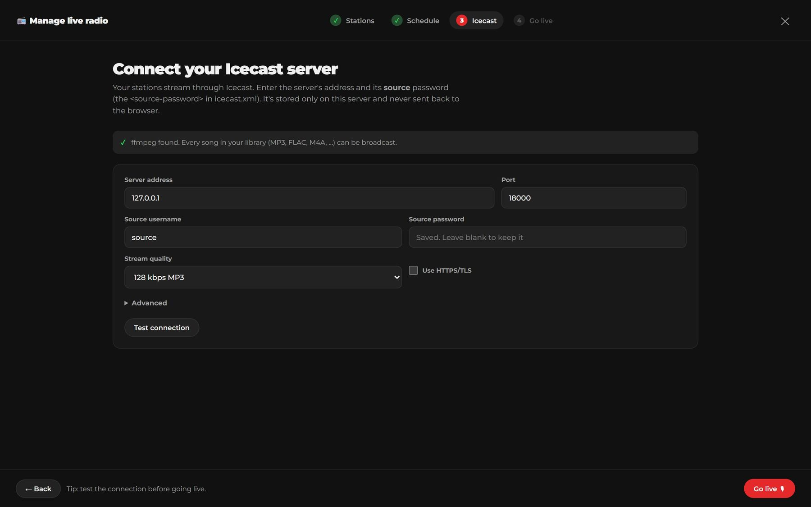
| Field | What to enter |
|---|---|
| Server address | localhost if Icecast runs on the same computer; otherwise its IP or host name. Don't include http://. |
| Port | The <port> from icecast.xml, usually 8000 |
| Source username | source, unless your Icecast gives mounts their own login |
| Source password | The <source-password>, not the admin password. Stored only on your server and never shown again (leave it blank later to keep it). |
| Stream quality | 128, 192 (recommended), 256 or 320 kbps MP3 |
| Use HTTPS/TLS | Only if your Icecast itself serves HTTPS |
| Advanced: Public listen URL | The address listeners should use if it differs from the server address, for example https://radio.example.com behind a reverse proxy |
| Advanced: Mount prefix | Prefixes every mount, for example leon gives /leon-hits. Useful when sharing an Icecast server. |
| Advanced: Public directory | Lists your stations in Icecast's public directory. Leave it off for private stations. |
Click Test connection. A green "Connected" means Icecast accepted the source password. Otherwise the message tells you what's wrong (unreachable, wrong password, and so on).
4. Go live
Click Go live. You'll see a progress bar and a row per station moving from Saved to Connecting to Encoding the first song to LIVE, with the first song shown. That's it: the stations keep running in the background and restart by themselves whenever leon.music starts.
Listening
- In leon.music: open Radio and click a station. The player shows a LIVE badge and the current song. Clicking a station's name opens its schedule for the next 24 hours.
- In any other player: open
http://<icecast-address>:8000/<mount>, for examplehttp://192.168.1.20:8000/hits. This works in VLC, most phone radio apps and many smart speakers. Mounts are named after the station:/one,/hits,/club,/chill,/holiday, and custom stations use their name (/sunday-brunch). - From outside your home network: listeners must be able to reach Icecast. Either forward port 8000 on your router, or put Icecast behind a reverse proxy with HTTPS and enter that address as the Public listen URL. If Icecast is only reachable as
localhost, leon.music relays the stream for its own users automatically, but external players can't use it.

How much bandwidth?
Icecast sends one copy of the stream per listener. Upload needed ≈ listeners × quality: 10 people on a 192 kbps station use about 1.9 Mbit/s. One listener uses roughly 86 MB per hour at 192 kbps (58 MB at 128 kbps). leon.music itself only uploads one stream per station to Icecast.
Managing your stations
- Change anything: Radio → Manage live radio reopens the wizard with everything filled in. Add or remove stations, change Icecast settings, or click Turn off live radio to remove all stations (your Icecast settings stay saved).
- Edit one schedule: open a station's schedule page and click ✎ Edit schedule, then Save changes. There's no need to go through the Icecast step again, and the station stays on air while the new schedule takes over at the next song.
- Take a station off air: hover its tile and press ⏻. Press it again to bring it back.
- Station status: tiles show LIVE, STARTING, OFF AIR (switched off) or OFFLINE (a problem; admins see the reason in the wizard).
When something goes wrong
Stations fix most problems themselves. If Icecast stops or the network drops, a station goes OFFLINE and retries after 3 seconds, then 6, 12 and so on up to once a minute, and goes back on air as soon as Icecast returns. Problems that a quick retry can't fix (a wrong password, a mount already in use, a station with no playable songs) are retried every 30 seconds until you fix the setting.
| Message | Fix |
|---|---|
| Can't reach Icecast at … | Icecast isn't running, or the address or port is wrong, or a firewall blocks it. |
| Icecast rejected the source username or password | Use the <source-password> from icecast.xml, not the admin password. |
| Mount … is already in use | Another program (or a second copy of leon.music) is broadcasting on that mount. Stop it, or set a mount prefix. |
| No playable songs in this station's playlists | The playlists are empty, or they only contain non-MP3 files and ffmpeg isn't installed. |
| Couldn't encode any songs | ffmpeg failed on several files in a row. Check that the files play normally and that ffmpeg works (ffmpeg -version). |
| Only some songs play | ffmpeg wasn't found, so only MP3s are broadcast. Install ffmpeg and restart. |
Internet radio streams
You can also add any Icecast or Shoutcast stream URL in the admin panel's Radio stations card. These appear under More Stations, with now-playing info read from the stream.
Admin panel
Open /admin (for example http://localhost:7733/admin) and sign in with the admin password.
- Logo & covers: place your logo on Essentials and playlist covers. It also appears on Made for You cards.
- Theme: accent colour, hero banner image and tint.
- Artists: turn online artist photos and online lyrics (LRCLIB) on or off, force Essentials pages, set photos by URL.
- Release years: look up missing release years on Deezer, with live progress.
- Radio stations: add and remove internet radio streams.
- Security: change the admin password, set or clear the library password.
Admin accounts
Besides the built-in admin login, any user account can be an admin. It keeps its own profile, likes and playlists and also gets the admin controls (including /admin) just by logging in. Use Make admin in Settings → Users, or the command line from the folder with leon_music.py:
cd path\to\leonmusic python leon_music.py admin list # accounts, ★ = admin python leon_music.py admin add alex # make an account an admin python leon_music.py admin remove alex # take it away again python leon_music.py admin create someone # new admin account, asks for a password
The commands work while leon.music is running. They need the Python version; with the packaged app, use Make admin in Settings instead.
Configuration & data
Everything lives in ~/.leon-music/. Your music files are only read, never modified.
| Path | Contents |
|---|---|
config.json | Library path and name, theme, password hashes, radio and live-radio setup (including the Icecast source password) |
library.db | Track index, embedded covers, plays, accounts, sessions, mixes, likes, playlists, profiles, friends and saved lyrics |
playlist-covers/ | Generated playlist covers |
artist-pics/ | Cached or custom artist photos |
To start over, delete the folder. To use a different port, change PORT near the top of leon_music.py.
Building an app
pip install pyinstaller pyinstaller --onefile --windowed --name "leon.music" leon_music.py
Put frontend.html next to the built app; it's loaded from disk at runtime. This works on Windows (.exe) and macOS (.app). For live radio, put ffmpeg next to the app too.
API
Everything is under /api. Once logins are on, requests need a session cookie (from POST /api/auth/login) or an X-Admin-Token header.
| Endpoint | Description |
|---|---|
GET /api/status | Library name, counts, scan progress, theme |
GET /api/tracks, /albums, /artists, /playlists | Browse the library |
GET /api/stream/{id} | Audio with range support |
GET /api/search?q= | Songs, artists and albums |
GET /api/genres, /genres/{key}, /decades | Categories and their pages |
GET /api/new, /charts?period=week|month|all | New page and charts |
POST /api/plays/{id} | Count a play |
POST /api/auth/login, /auth/logout, GET /api/auth/me | Logins |
GET /api/me/home, /me/rewind, /me/rewind/week | Personal mixes and Rewind |
GET /api/radio/stations, /radio/{id}/now | Radio stations and now playing |
GET|POST|DELETE /api/me/likes | Liked Songs |
/api/me/playlists, /api/me/playlists/{id} | Your playlists (create, edit, reorder, share) |
GET /api/lyrics/{id} | Lyrics (synced or plain) |
GET /api/albums/related?album= | Featured On, More from, You May Also Like |
GET|PATCH /api/me/profile, GET /api/users/{name} | Profiles |
/api/me/friends, /api/me/friends/{name} | Friends and requests |
GET /api/christmas | The Christmas category page |
POST /api/covers/preview, GET /api/covers/fonts, /api/me/playlists/{id}/cover | Cover designer |
/api/me/email, POST /api/auth/forgot, /api/auth/reset | Email address, preferences and password reset |
/rest/* | Subsonic API (1.16.1, OpenSubsonic) for apps |
GET /api/explicit | IDs of explicit songs |
GET|POST /api/broadcast | Live radio setup (admin) |
/api/admin/* | Admin actions (users, settings, stations) |
leon.music can send emails through your own mail provider: password resets, digests, friend notifications and server alerts.
- Open the admin panel's Email card and fill in your provider's SMTP details. Gmail and Outlook need an app password; services like Brevo or Resend give you SMTP details too.
- Set the public address of your server, so links in emails point to the right place.
- Press Send test email.
Each person adds their address in Settings → Email (confirming with their password) and clicks the link they're sent. Then they pick which emails they want; everything starts off:
- Weekly Rewind digest on Monday mornings.
- New music added to the server that week, with album covers.
- Friends: friend requests, accepted requests and playlists your friends share.
- New login to your account.
- End of Year Rewind in December.
- Admins also get server alerts: a radio station off air for 10 minutes, a failed library scan, or a nearly full disk. You can send these to an extra address too.
Forgot password? on the login screen emails a reset link (one hour, single use) to a confirmed address. Adding an account with an email sends a welcome. Every optional email has an unsubscribe link.
config.json on the server and never shown again in the admin panel.Subsonic apps
leon.music speaks the Subsonic API, so you can use apps like Symfonium, Tempo or DSub (Android), Substreamer or play:Sub (iPhone) and Feishin (desktop). They add offline downloads, CarPlay and Android Auto.
- In leon.music, open Settings → Apps & scrobbling and press Create app password.
- In the app, add a server with the address, username and app password shown there.
- Your likes, playlists, plays, lyrics and folder playlists are shared with the app; starring a song likes it. Plays from apps count towards charts, Rewind and mixes.
- Apps can ask for a lower bitrate on mobile data; leon.music converts with ffmpeg when it's installed.
- The app password only works in apps. New password signs every app out. Your normal password works too, but only in apps that don't use token login.
- No accounts on your server? Log in to the admin panel and create an app password for
admin.
Last.fm & ListenBrainz
Each person can send what they play to Last.fm and ListenBrainz from Settings → Apps & scrobbling. A song counts once half of it (or 4 minutes) has played, from the web player or a Subsonic app. Only the song, artist, album, length and time are sent. If the internet is down, scrobbles are kept and sent later.
- ListenBrainz: paste the user token from listenbrainz.org/settings.
- Last.fm: the admin first creates a free API account at last.fm/api/account/create, sets its callback URL to the one shown in the admin panel's Last.fm scrobbling card, and pastes the key and shared secret there. Then everyone can press Connect Last.fm.
Security
- All passwords (admin, library and accounts) are salted scrypt hashes. Older plain-text admin passwords are converted automatically.
- Logins are rate-limited, and cookies are HTTP-only (and secure over HTTPS).
- The API isn't open to other websites (no CORS).
- Admin actions that fetch URLs (covers, artist photos) make requests from your machine, so only give admin access to people you trust.
- Artist photo lookup and the release-year scan send artist and song names to deezer.com, and lyrics lookup sends artist, title, album and length to lrclib.net. Each can be turned off.
- Listening activity on profiles is shared with friends only by default, and each person can change it to everyone or only themselves.
- The Icecast source password is stored in
config.jsonso stations can reconnect, and is never sent back to the browser.
Found a vulnerability? Please open a private security advisory instead of a public issue.
Troubleshooting
"Too many attempts" when logging in
That's the lockout after 5 wrong passwords. Wait 5 minutes, or restart leon.music.
A station says "Temporarily off air"
Open Manage live radio → Icecast and press Test connection. The error messages and their fixes are listed in When something goes wrong.
Only some songs play on my station
ffmpeg wasn't found, so only MP3 files can be broadcast. Install ffmpeg and restart leon.music.
Decades or genres are missing
They come from file tags. Add genre and year tags, or run the Release years scan in the admin panel, then rescan.
Charts and Rewind are empty
Both need listening history. A play counts after about 30 seconds, and Rewind only counts plays made while logged in with an account.